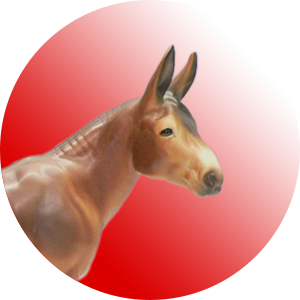

Go Mules! The image appears at its original size as an inline element. This is also a link.
Go Mules! The image appears at its original size as an inline element. This is also a link.This is my school mascot:
Go Mules! The image appears at its original size as an inline element. This is also a link.
If we specify a size, we can resize the image:  so that it is small enough to fit where we want it. This image is normally 200x206.
so that it is small enough to fit where we want it. This image is normally 200x206.
We use an alternate atribut for when there is a problem with the image or for screenreaders used by sision-impared visitors. Here is a missing image: 
Images should be hosted in an organized folder and stored on a server with the html files and must maintain the same relative place with each other.

A JPEG is best for phototgraphic images and provides a compress formate that gives a small file size when faced with lots of color pixel variation.

A GIF is best for limited colors. Allows for threshold transparency and animation.
A PNG does well with limited color and photographic content. It allows for gradient and subtle transparency.
